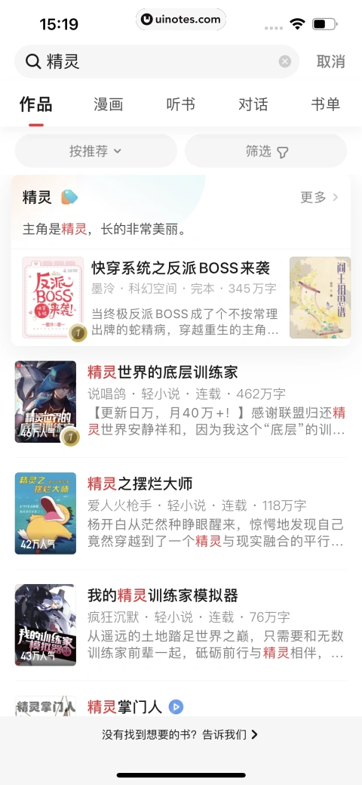
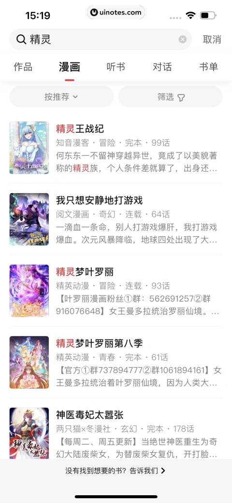
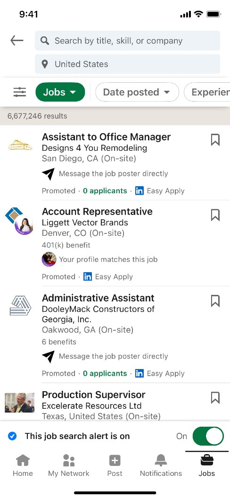
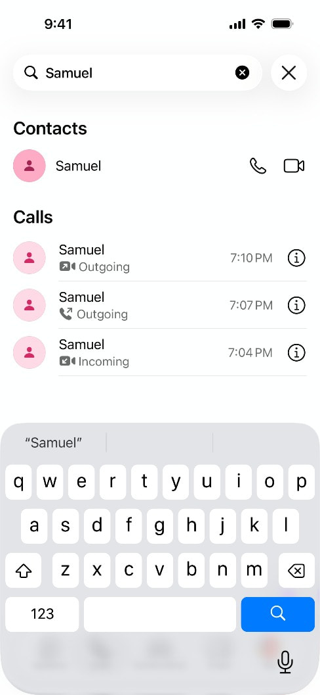

产品: 起点读书 平台: iOS 结果类型: 作品 组织方式: 内容标签加摘要列表 可见控件: 按推荐与筛选
https://uinotes.com/pin/566060765477449935
比较海内外热门产品搜索结果页的信息架构、结果组织与筛选方式，为产品设计提供真实页面参考。
分类维度：移动端搜索结果的任务与信息组织方式 · Agent 逐张查看本次四张 collected App Screen 后确认：数字阅读结果按内容类型分栏，职业检索以筛选和高密度职位卡片支持决策，即时通信检索则按联系人与通话实体分区。该维度只来自本次真实素材观察，不由 product_type、notes 或关键词推断。 · 有效样本：4
起点读书 Screen 在同一查询下以作品、漫画、听书、对话和书单标签切换结果类型，并在各标签内使用封面与摘要列表。

https://uinotes.com/pin/566060765477449935

https://uinotes.com/pin/886504874566301516
LinkedIn Screen 以查询与地区、筛选器、结果总数和职位卡片组成可连续评估的列表。

https://refero.design/screens/cc88bfb1-4f91-45a7-8b8f-c50eeafdf60d?query=product%20search&source=search
WhatsApp Screen 在单一查询下按联系人和通话两种实体分区，并保留直接发起语音或视频操作。

https://refero.design/screens/5239ecce-ed0c-47f5-ac6c-8abc007bc590?query=video%20search&source=search